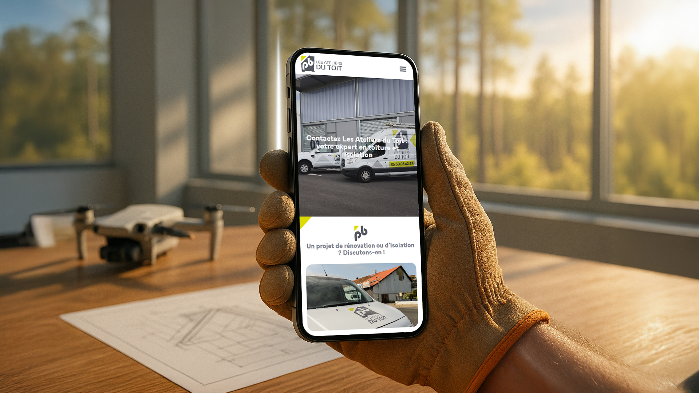
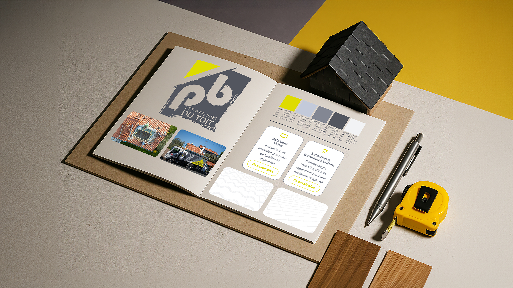
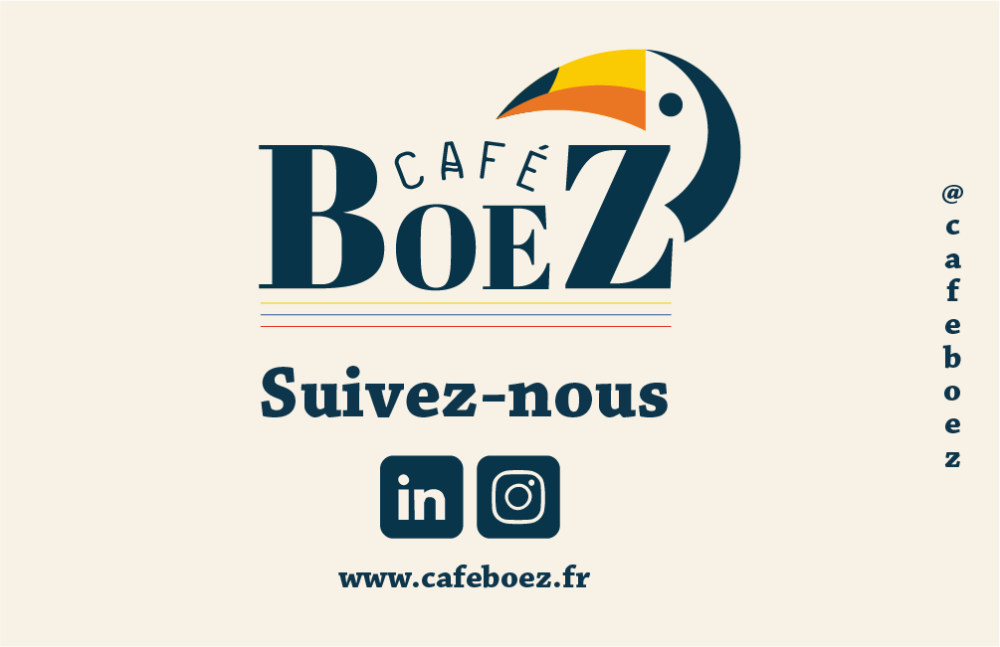
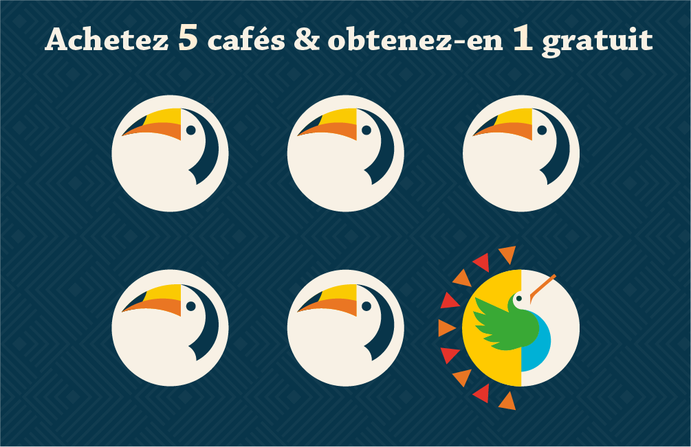
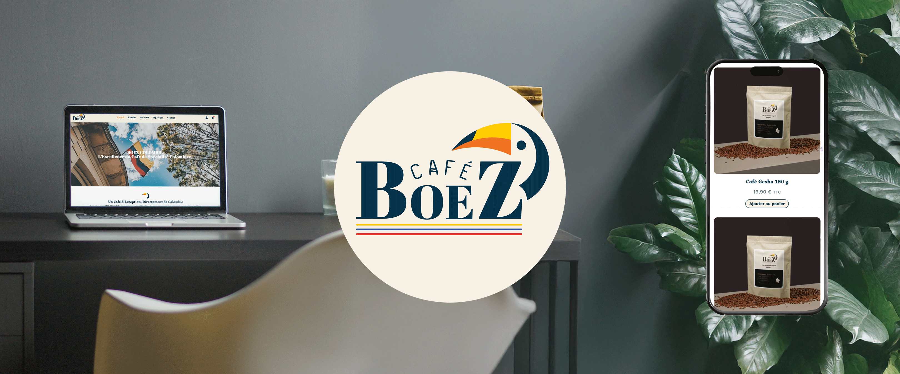
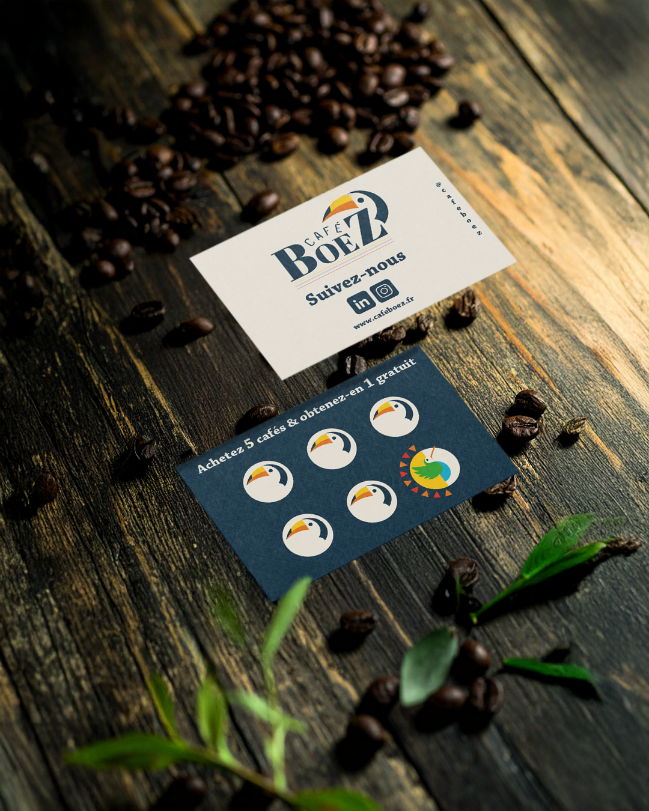

Stage de 8 semaines à l'agence OwlBlack à Anglet, en plein Pays Basque. Graphisme, motion design, montage vidéo et photo pour des clients locaux : TPE, PME et startups.
J'ai dessiné le logo de SL Épaviste, épaviste agréé à Bayonne-Anglet. Le brief : une identité locale qui dit tout de suite ce que fait l'entreprise, lisible même en petit. C'est mon premier logo professionnel réalisé de A à Z sous Adobe Illustrator, pour un vrai client, en conditions réelles.
L'idée retenue après plusieurs ébauches : une croix basque dont les branches se terminent en crochet de remorquage. Un symbole ancré dans le territoire, lisible d'un coup d'œil même à petite taille. J'ai travaillé les proportions et les épaisseurs sur plusieurs itérations pour que le signe reste lisible quelle que soit la taille d'impression, de la carte de visite au covering de véhicule.
Décliné en deux versions : blanc sur fond sombre, noir sur fond clair. Le logo est aujourd'hui utilisé sur le site du client, ses cartes de visite et ses véhicules. Voir le site →


Photomontages pour Les Ateliers du Toit, une entreprise de rénovation de toitures au Pays Basque. Julien m'a fourni des photos brutes de chantiers et de toitures rénovées. Mon travail : les intégrer dans des décors réalistes sous Photoshop pour montrer le rendu final et alimenter le portfolio web de l'agence.
Aucun template, tout à la main. Sélections au pixel près, masques de calque, harmonisation de lumière et de colorimétrie entre les différentes sources. C'est sur ce projet que j'ai vraiment progressé en retouche et en assemblage d'images. Le rendu doit être crédible pour convaincre un propriétaire de commander des travaux, donc pas de place pour l'approximatif.
Pour Instagram, j'ai conçu un visuel panoramique découpé en trois posts carrés. Sur la grille du profil, les trois images se reconstituent en une seule image large. Chaque post reste lisible individuellement. Le sujet principal est centré, les détails en périphérie. Ce format, je l'ai ensuite appliqué pour d'autres clients de l'agence.



Carte de visite recto-verso pour Café Boez, un coffee shop local. Mon premier projet print professionnel de A à Z : brief client, direction artistique, conception sous Photoshop et préparation des fichiers pour l'imprimeur.
J'ai appris les contraintes d'impression directement en production avec Julien : conversion en CMJN, résolution 300 DPI minimum, tracés de coupe et fond perdu, polices vectorisées, export PDF haute qualité. Des notions vues en cours que j'ai vraiment saisies en conditions réelles. La différence entre un rendu écran et un rendu imprimé m'a obligé à reprendre les couleurs plusieurs fois avant validation.
En parallèle, un triptyque Instagram animé en GIF : même principe que pour Les Ateliers du Toit, mais animé cette fois. Trois posts carrés qui se reconstituent en un visuel panoramique sur la grille du profil. Ce format a ensuite servi de référence pour d'autres clients de l'agence.




Deux vidéos pédagogiques produites pour OwlBlack : "Le SEO expliqué par OwlBlack" et "Le SEA expliqué par OwlBlack". Des formats courts pensés pour le web, intégrés sur le site de l'agence pour accompagner les prospects.
Workflow complet : script rédigé après une formation interne avec Julien sur le référencement et la publicité en ligne. Illustrations issues de la bibliothèque Canva Pro, adaptées à la charte graphique de l'agence. Animations et mise en scène entièrement sur Canva Pro. Voix-off générée sur Eleven Labs avec une voix IA calibrée pour correspondre au ton de l'agence. Montage final, synchronisation son-image et export sous Premiere Pro.
Ma première expérience de production vidéo de A à Z, du script au fichier livré. J'ai appris à travailler vite sur Canva Pro tout en gardant un résultat propre, et à caler le rythme des animations sur la voix-off pour que tout reste fluide à regarder.


La mission la plus ambitieuse du stage : une vidéo promo complète pour Juriactes, une startup legaltech qui automatise la génération de documents juridiques. J'ai tout géré de A à Z, de la conception à la livraison.
Première étape : le storyboard scène par scène sur Illustrator. Chaque plan cadré, chaque transition pensée avant de toucher After Effects. Ensuite la création des assets graphiques : pictogrammes sur mesure (balance, documents, chronomètre), palette de couleurs, typographie adaptée à l'univers juridique-tech du client. L'objectif était un rendu propre pour une présentation en salon professionnel.
Animation entièrement sur After Effects, un logiciel que je n'avais quasiment jamais utilisé avant ce projet. J'ai appris les keyframes, les expressions de base et les compositions imbriquées en avançant. Voix-off enregistrée et synchronisée image par image, montage final sur Premiere Pro. Plusieurs semaines de travail pour quelques minutes de vidéo finale. Le client était satisfait à la présentation.


J'ai participé au clip promo de Nouveau, une marque de streetwear locale. Journée complète de tournage entre Bayonne et Biarritz, plusieurs mannequins, des décors emblématiques du Pays Basque : la Grande Plage, les ruelles du centre-ville, les bords de Nive.
Mon rôle sur le terrain : cadreur vidéo aux côtés de Marco Fioretta, directeur artistique de la marque. J'ai géré le cadrage vidéo et quelques prises de vue photo en parallèle. Une journée à s'adapter en continu à la lumière naturelle, aux déplacements rapides et aux imprévus du tournage en extérieur, avec un planning serré.
Post-production partagée avec Marco : sélection des plans, étalonnage couleur des photos produits, participation au montage final sur Premiere Pro. Ma première expérience sur un tournage commercial avec une équipe et des exigences de rendu professionnel.

Shooting photo dans un ranch au Pays Basque pour les réseaux sociaux d'un éleveur de chevaux Curly, une race rare aux crins bouclés. Journée complète en extérieur : lumière naturelle changeante, sujets en mouvement constant, grands espaces ouverts.
Le défi principal : photographier des chevaux en liberté. Pas de mise en scène possible, tout se joue sur les réflexes et les réglages en temps réel. Vitesse d'obturation pour figer les mouvements, ouverture pour isoler les sujets du fond, ISO pour s'adapter aux zones ombragées ou en plein soleil.
Livraison brute à la demande du client, sans retouche. Une contrainte qui m'a forcé à être plus rigoureux sur chaque prise au moment du shooting. Voir l'élevage →
Let's work together.